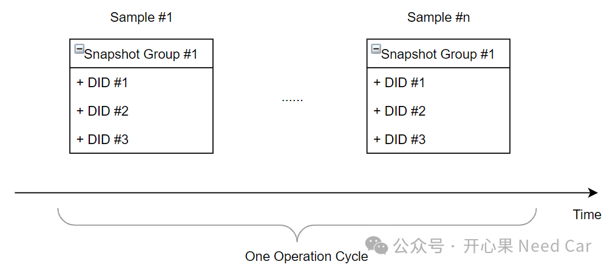
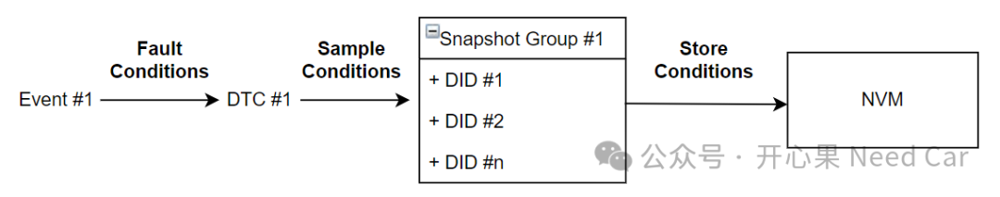
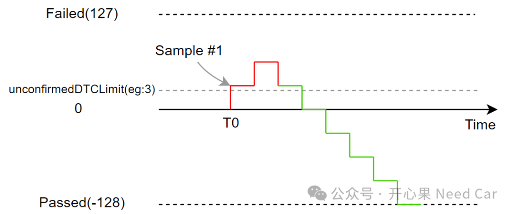
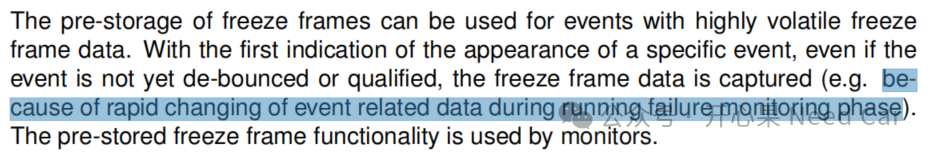
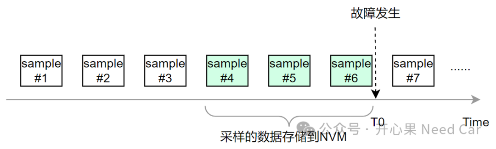

开心果 Need Car · 2024-04-04T14:19:00+08:00 · 微信原文
1、快照数据的采样和存储


Store Conditions：与DTC关联的数据信息（eg：DTC故障码、故障状态、快照数据、拓展数据）可以存储NVM的条件，eg：DTC故障状态bit3（Confirmed DTC bit）由0->1时存储。
2、工程中的快照数据采样策略解析
如果你在诊断项目开发过程中，碰到过"unconfirmedDTCLimit"这个词，应该是有所思考的。在这家OEM的诊断需求中，快照数据的采样，有这样几种策略：
每次FDC（Fault Detection Counter，错误检测计数器）≥ unconfirmedDTCLimit时采样，采样数据队列存储；
一个驾驶循环内（One Operation Cycle），当FDC（Fault Detection Counter，错误检测计数器）多次 ≥ unconfirmedDTCLimit时，只保留第一次采样值；
一个驾驶循环内（One Operation Cycle），当FDC（Fault Detection Counter，错误检测计数器）多次 ≥ unconfirmedDTCLimit时，只保留最后一次采样值。
提示：unconfirmedDTCLimit可能是3、18、127...等任意值，不一定必须是127。
不知道大家是否对如上的第二种采样策略有疑问，这里提这样一个问题：如果unconfirmedDTCLimit = 3，FDC没有达到127就采样，最终故障没有成熟，DTC没有存储，采样有什么意义呢？具体解释，监控某个事件（Event），同一个驾驶循环内，该Event对应的FDC变化趋势如下，T0时刻FDC ＞unconfirmedDTCLimit，触发采样（Sample #1），但是，整个驾驶循环内，这个Event又回归了正常，对应的DTC并没有报出，采样数据有什么意义呢？示意如下：

对于这样的工况，采样似乎没有必要，但是，真的是这样吗？不妨看看Autosar DEM（Diagnostic Event Manager）给出的解释。
3、Pre-store freeze frame
Prestore freeze frame（预存储冻结帧），Autosar中的冻结帧（Freeze Frame）和UDS中的快照数据（Snapshot Data）,可以看作是一个意思，两种不同的叫法。那么，Autosar提出预存储冻结帧的意义是什么呢？DEM的解释如下：

如上，意思是说：某些事件（Event）关联的数据变化频率高，如果等到事件完成去抖再捕获，捕获的快照数据很可能没有太大的分析价值。所以，可以提前采样快照数据，甚至可以将这些采集的数据以队列（Queue）的形式循环存储，eg：每间隔5ms采集一次，队列最大缓存3次，如此，即可实时缓存最新的3次快照数据，一旦故障真的发生，这些提前缓存的快照数据即可存储到NVM，示意如下：

往期精彩回顾
CAN FD通信：数据段错误，错误帧的速率是500Kbps还是2Mbps？
VSCode实用技巧：local-history及.gitignore